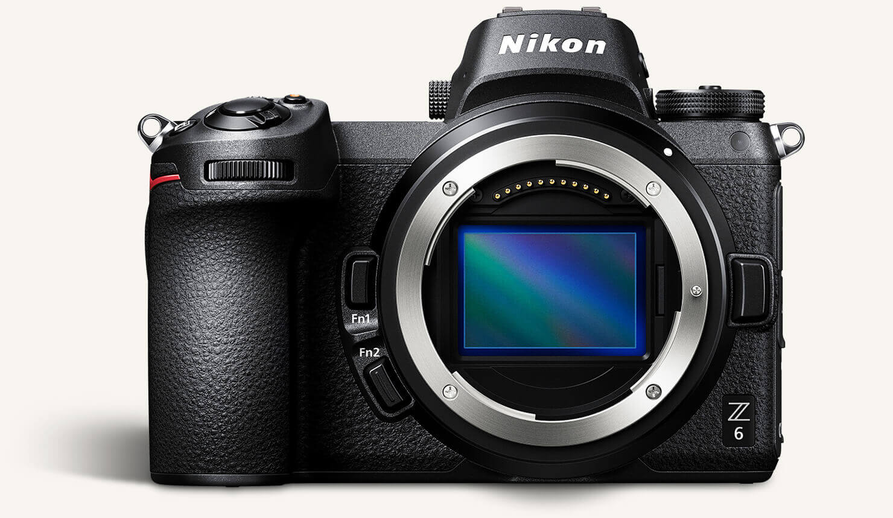
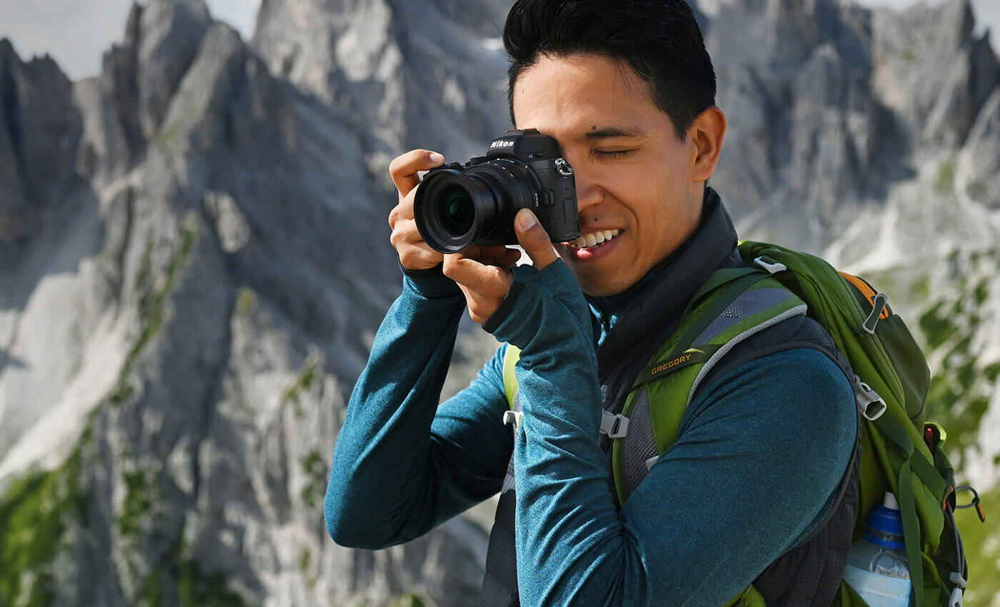

Z系列
无反光镜与尼康的传统相结合的优势

更大的卡口，更丰富的创意
Nikon发布
Z卡口系列相机拥有大直径镜头卡口。这意味着能聚集更多的光线。而更多的光线意味着更快的性能，更清晰的影像。最大光圈f/0.95的镜头设计引人注目。
阅读(9999)评论(10000)赞 (66666) 标签：微单 / 单反 / 相机 / 尼康 / 便携 / 无反 / 记录生活

小巧却强大
Nikon发布
Z卡口系列相机从内到外都令人惊艳。符合人体工程学的设计，功能强大，结构坚固。这是为影像创作者量身打造的相机。
阅读(9999)评论(10000)赞 (66666) 标签：微单 / 单反 / 相机 / 尼康 / 便携 / 无反 / 记录生活